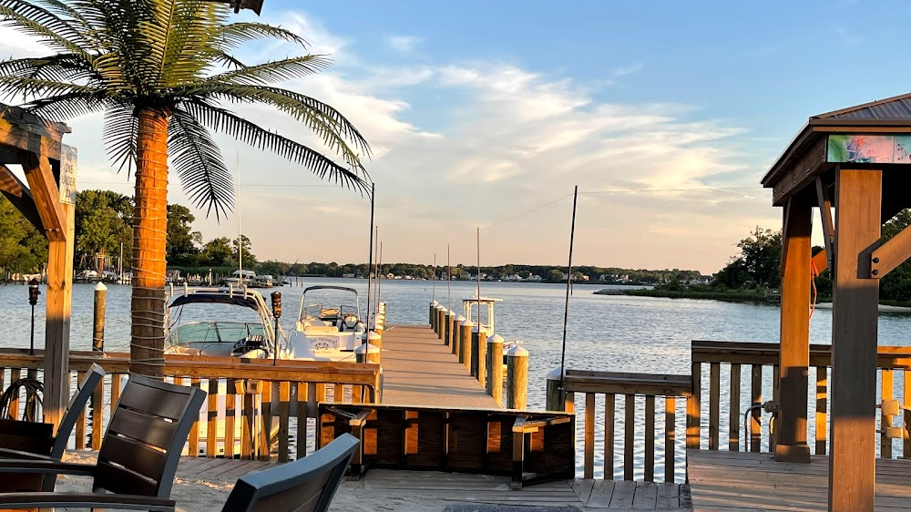
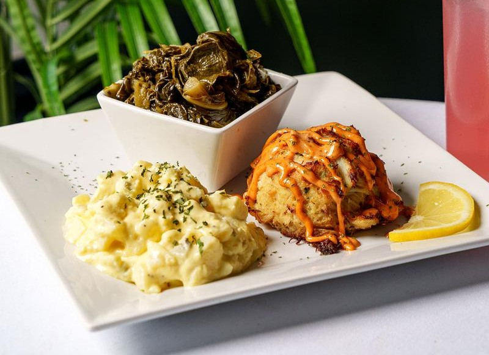

Food
The Reserve Restaurant
-

The Reserve is a sophisticated and premium Baltimore, Maryland restaurant recognized for its elegant ambiance and outstanding cuisine. The restaurant, housed in a historic structure, mixes modern architecture with historical charm, providing a refined dining experience. With a broad wine list and competent service, it's a popular choice for special events and fine dining.
-

The menu at The Reserve featured a diverse selection of meals inspired by fresh, locally sourced ingredients. The Reserve's menu focuses on modern American cuisine with a creative twist, with a variety of masterfully produced dishes that highlight fresh ingredients. The menu is constantly changing and expanding to cater to peoples' tastes.